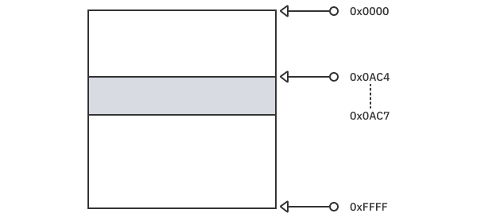
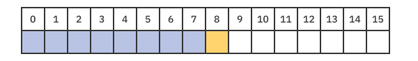
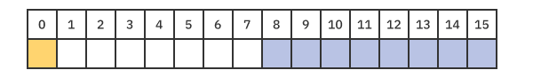
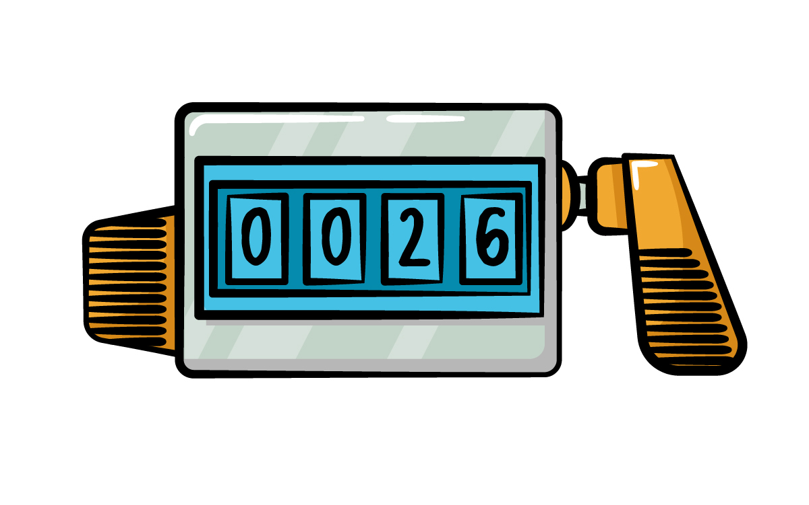

Chapter 9: Unsafe¶
Swift is an easy language to learn. It can take care of a lot of things for you and help you keep your code safe and clear to minimize bugs. If you were to compare it to C++, many people would say C++ is harder. Swift takes care of type checking, memory allocation, and many things on your behalf so you can focus on what you want to do in your code, and not how the machine will handle your code. But C++ gives you more power and more control. As we’re told in the Spider-Man comics and movies, “With great power comes great responsibility”.
By default, Swift is a memory-safe and type-safe language. This means you cannot access uninitialized memory and can only treat an instance as the type it was created. You can’t treat a String as if it were an Int or a Numeric and vice-versa. But this doesn’t cover completely what the word safe means.
For a more general description, Swift validates any input, whether it’s valid or invalid, and behaves accordingly. So storing a number in a string property, for example, will fail. Additionally, forcing a value from an optional that doesn’t have a value is not a valid behavior. Neither is storing a number that exceeds the maximum allowed value of your variable. All of those are different cases related to safety.
In some cases, you might need your code to be extremely optimized, in which case the tiny overhead added by the safety checks from Swift might be too expensive. You might be dealing with a huge stream of real-time data, manipulating large files or other large operations that deal with large data. Or you might even be working with C++ code within your app. In such cases, you want to have full control over your objects, or in other words: Pointers.
In this chapter, you’ll learn how you can gain this control. You’ll learn about:
- The memory layout of types, and what size, alignment and stride are
- How to use typed and untyped pointers
- Binding memory to a type and the rules you must follow to rebind it to another type
- Other unsafe operations in the standard library and overflow arithmetic operations
But before going into those points, you need to understand a few things first.
Definition of unsafe & undefined behaviors¶
As stated earlier, type safety means that Swift checks any input or operation whether it is valid or not and behaves accordingly. However, there is also a whole other world in Swift that has the keyword unsafe. This gives you more control and moves the responsibility of validation to you, the developer. Swift will trust that you know what you’re doing.
Before going deeper into what this keyword means, you must understand how Swift behaves when you violate any of the type safety rules. Some violations are checked at compile time, while others are checked during runtime — and those consistently cause a runtime crash. A rule to remember: Safe code doesn’t mean no crashes. It means that if your code received unexpected input, it will stop execution. One of the ways it can do that is to throw a fatal error. But with unsafe code, it will use the invalid input, work with it and eventually — maybe — provide an output. Such situations are hard to debug.
This is how the keyword unsafe works. The moment a rule is violated, the behavior of your code is completely unknown. Your code might crash, or it might resume. It might give you a wrong value or change the value of another property. How your application will proceed is undefined and can change from one execution to another. It’s extremely important to know how your code will behave and what to expect once you start using unsafe so you’re careful with it.
The Swift standard library provides pointers for unsafe that are similar in concept to C++ pointers. There is no better way to learn how to use these pointers than to understand how they work.
What is a pointer?¶
Swift has a linear memory layout, so imagine your app’s address space is from 0x0000 to 0xFFFF. The actual address space is represented by 64 bits rather than 16. But to keep it simple here, this chapter will use smaller numbers.
This address space contains the executable of your app, dynamic libraries, assets, etc. A pointer is something that points to a specific address in memory. So say that you created an object at 0x0AC4, and this object was 4 bytes in size. This object’s memory space extends from 0x0AC4 to 0x0AC7.

To write in memory, you specify what you want to write at which address. This means that if you want to write the number 9 in the second byte (index 1), you specify in the application to go to address 0x0AC4 + 1, and write 9.
If you happen to write 0x0AC4 + 100, then you might overwrite an existing value and corrupt your app’s state. This is clearly out of bounds for your object. But in this case, you’re trusted to know what you’re doing.
Another possible problem is the object that was in this address location was deleted, but you still have the pointer to this location and used it to store a value. In this case, you’ll overwrite an existing object or an undefined behavior will occur. You might not know what will happen, but this will cause a problem.
A pointer is simply the address of where your information resides in memory. The size of the object in memory is a different story, which you’ll cover shortly.
Now that you think about it, what is the difference between reference and pointer? A reference can also be described as something that refers to an object in memory, which is the same thing as a pointer.
Pointer vs. reference¶
In a way, they’re quite similar, yet there is quite a difference. Behind the scenes, a reference is a pointer, but pointer operations aren’t available to you. When you work with pointers, you take care of the life-cycle of the pointer itself as well as the object it points at. Normally, you define a pointer and then allocate and initialize the object it points at. If you lose that pointer and you didn’t clear out this object, you can never reach it again. And if you delete the object and keep the pointer, you’ll come across a variety of undefined behaviors if you try to use that pointer again.
So to restate in fewer words, they’re similar in concept, but a reference is an abstraction of those operations that the standard library takes care of for you. This is why using pointers gives you more control over objects and data in memory because you’re expected to take care of those things yourself. As said before, it gives you more power, but “With great power comes great responsibility”.
Memory layout¶
To use pointers properly, you must understand how memory itself is organized. Memory layout for value types is quite different than the layout of reference types. This section will start by covering value types.
There are three values you need to understand:
- Size: This refers to the number of bytes it takes to store a value of this type. A size of four means this type requires four bytes of storage.
- Alignment: For a simple explanation, the address must be divisible by the alignment value. A value of two means this type can’t be stored on a pointer of odd value. You’ll learn more about this shortly.
- Stride: This refers to how many bytes to increment on your pointer to read the next object.
The size influences the other two values, as the alignment and stride can never be smaller. Size has a clear meaning, but the other two require explanation.
Consider a type that has an alignment value of four. This means this type must be stored on an address divisible by four. So why does this matter?
Imagine that the device reads only four bytes at a time. Such a system can read only bytes 0-3, 4-7, 8-11, etc. Imagine now that an object was stored from bytes 2 through 5. To read these bytes from memory, the device would need to read the first set of bytes, then cut out only its second half (2-3), then read the second set, and then, finally, concatenate the first half (4-5) with the previous half to properly construct the object’s value. This describes a misaligned value.
Misaligned values severely affect performance. Compilers keep this from happening even if it costs more memory.
For stride, imagine you have an array of items in which each item takes up eight bytes of memory. Here, it makes sense that each time you want to read the next value, you do so by incrementing the pointer by the item size.
But now imagine that the item size is nine. If the compiler depended only on the size to increment the pointer, then there would be misaligned objects. And as you just learned, the compiler actively tries to avoid these.
With an item size of nine, you would need to have a stride of 16. Thus, moving the pointer that accesses the first item by 16 bytes will point to the second item. Those remaining 7 bytes (16 minus 9) are called padding and aren’t used at all.
Layout for Swift types¶
You can determine those values directly through code. For example, for the type Int, you can use the enum MemoryLayout to see those values.
MemoryLayout<Int>.size // returns 8 (on 64-bit)
MemoryLayout<Int>.alignment // returns 8 (on 64-bit)
MemoryLayout<Int>.stride // returns 8 (on 64-bit)
On a 64-bit system, an Int will have size, alignment and stride with a value of eight.
Note: On a 64-bit system, Int defaults to the Int64 type, which has eight bytes. On a 32-bit system, it defaults to Int32, which has four bytes.
You can check the values of other types, too:
MemoryLayout<Int16>.size // returns 2
MemoryLayout<Int16>.alignment // returns 2
MemoryLayout<Int16>.stride // returns 2
MemoryLayout<Bool>.size // returns 1
MemoryLayout<Bool>.alignment // returns 1
MemoryLayout<Bool>.stride // returns 1
MemoryLayout<Float>.size // returns 4
MemoryLayout<Float>.alignment // returns 4
MemoryLayout<Float>.stride // returns 4
MemoryLayout<Double>.size // returns 8
MemoryLayout<Double>.alignment // returns 8
MemoryLayout<Double>.stride // returns 8
You could also use type inference to determine the same values:
let zero = 0.0
MemoryLayout.size(ofValue: zero) // returns 8
In the next section, you’ll see how a combination of types affects the memory layout of the struct itself.
Trivial types¶
You can copy a trivial type bit for bit with no indirection or reference-counting operations. Generally, native Swift types that don’t contain strong or weak references or other forms of indirection are trivial, as are imported C++ structs and enums.
In other words, the basic data types such as Int, Float, Double and Bool are all trivial types. Structs or enums that contain those value types and don’t contain any reference types are also considered trivial types.
Consider the following example:
struct IntBoolStruct {
var intValue: Int
var boolValue: Bool
}
This is a struct that has the first property as an Int and the second property of Bool.
Now, check its memory layout:
MemoryLayout<IntBoolStruct>.size // returns 9
MemoryLayout<IntBoolStruct>.alignment // returns 8
MemoryLayout<IntBoolStruct>.stride // returns 16
An Int has a size of 8, and a Bool has a size of 1, so it makes sense the struct has a size of 9.
For the alignment, it makes sense that it is 8 to ensure that intValue is not misaligned. As for stride, it has a value of 16 to maintain the alignment and to reserve enough space for the struct. It can’t be 9, nor can it be 8.

Ordering properties¶
Now, consider this other example:
struct BoolIntStruct {
var boolValue: Bool
var intValue: Int
}
MemoryLayout<BoolIntStruct>.size // returns 16
MemoryLayout<BoolIntStruct>.alignment // returns 8
MemoryLayout<BoolIntStruct>.stride // returns 16
This struct is almost identical to the previous one except for the order of the properties inside it: The boolean appears before the integer.
The size reported for this type is completely different! Why?

For the struct to be aligned, all the properties inside it must also be aligned. To have the boolean property stored before the integer, this means that a seven-bit padding is required right after the boolean to allow the integer to be properly aligned. This causes the padding to be considered in the size of the struct directly. The alignment and the stride values are the same as in IntBoolStruct.
Allocating for alignment¶
The two examples above don’t mean that any extra consideration is required for the ordering of the properties. The padding remained the same in the two examples, except only one of them considered it in the size property.
According to Apple’s guidelines, if you’re allocating memory directly for a pointer, you should allocate bytes equal to the stride, not the size. This will ensure that any consecutive memory allocations are also aligned.
To explain this directly, consider the following struct:
struct EmptyStruct {}
MemoryLayout<EmptyStruct>.size // returns 0
MemoryLayout<EmptyStruct>.alignment // returns 1
MemoryLayout<EmptyStruct>.stride // returns 1
This struct has no properties at all, so it’s logical to have a size of zero bytes. But you can’t have a non-existent object in memory. Anything in memory should have a size! Thus, one byte is allocated to the object, and this value is represented in the stride. This is why you should depend on stride instead of size when you allocate memory yourself.
Reference types¶
Reference types have a quite different memory layout. When you have a pointer of such a type, you’re pointing to a reference of that value and not the value itself. Think of it as if you have a pointer on a pointer.
Consider the following types and their memory layout:
class IntBoolClass {
var intValue: Int = 0
var boolValue: Bool = false
}
MemoryLayout<IntBoolClass>.size // returns 8
MemoryLayout<IntBoolClass>.alignment // returns 8
MemoryLayout<IntBoolClass>.stride // returns 8
class BoolIntClass {
var boolValue: Bool = false
var intValue: Int = 0
}
MemoryLayout<BoolIntClass>.size // returns 8
MemoryLayout<BoolIntClass>.alignment // returns 8
MemoryLayout<BoolIntClass>.stride // returns 8
class EmptyClass {}
MemoryLayout<EmptyClass>.size // returns 8
MemoryLayout<EmptyClass>.alignment // returns 8
MemoryLayout<EmptyClass>.stride // returns 8
All three classes have a value of eight for their size, alignment and stride. Regardless of whether the class had properties, the values remained the same.
Pointer types¶
Swift provides different pointer types. Each provides its own control safety levels or unsafety levels.
UnsafeRawPointerUnsafePointer<Type>
The first is the basic raw pointer that doesn’t know any information of the type it is pointing at. It’s a basic pointer on a specific byte.
The second is a pointer that knows the type of the object it points at. It’s also called a typed pointer.
Raw pointers can’t work on reference or non-trivial types. For those, you must use a typed pointer.
If you’re working with arrays, there’s a set of pointer types that can make things a little easier for you:
UnsafeRawBufferPointerUnsafeBufferPointer<Type>
All those pointers are read-only access. To allow read-and-write access, you need mutable pointers. Any of the above pointer types can be mutable, as seen below:
UnsafeMutableRawPointerUnsafeMutablePointer<Type>UnsafeMutableRawBufferPointerUnsafeMutableBufferPointer<Type>
This gives you a total of eight different pointer types you can use. But still … what is the need for all those, and what is the real difference?
Raw pointers¶
To understand raw pointers, consider the following example. Create a playground and add the following code:
var int16Value: UInt16 = 0x1122 // 4386
MemoryLayout.size(ofValue: int16Value) // 2
MemoryLayout.stride(ofValue: int16Value) // 2
MemoryLayout.alignment(ofValue: int16Value) // 2
This creates an unsigned-Int-16 with the value 4386. Then, as you saw previously, you’re checking the values of size, stride and alignment. As expected, the UInt16 has a size of two bytes. How about using a raw pointer to get the value of each byte separately?
Add the following code:
let int16bytesPointer = UnsafeMutableRawPointer.allocate(
byteCount: 2,
alignment: 2)
defer {
int16bytesPointer.deallocate()
}
int16bytesPointer.storeBytes(of: 0x1122, as: UInt16.self)
This defines a new mutable raw pointer, allocates two bytes for it and specifies that it must have an even alignment (alignment of two). For pointers, you’re taking care of everything. You’re responsible for allocating the memory and for deallocating it. Don’t forget the deallocation part or your code will leak memory. Afterward, you store the hex value 0x1122, which is equivalent to 4386 as an UInt16. You must specify the type of the value that you’ll save in the raw pointer.
Note: If you print the value of int16bytesPointer itself, it will give you the memory address where 4386 is stored. Each time you run your playground, it will give a different address.
Add this line:
let firstByte = int16bytesPointer.load(as: UInt8.self) // 34 (0x22)
This loads whatever is the memory address of int16bytesPointer and stores it in a new variable of the type you specified. firstByte now is of type UInt8 and has the value of 34, which has the hex value of 0x22.
Notice that the first byte is the least significant. This is because your values are stored in little-endian format, as you learned in Chapter 5: Numerics.
To read the second byte, add the following:
let offsetPointer = int16bytesPointer + 1
let secondByte = offsetPointer.load(as: UInt8.self) // 17 (0x11)
The first line creates a new pointer that points to an address one value above what’s in int16bytesPointer, thus referring to the next byte. The second line is just as you did before, you’re loading the contents of this address in a UInt8 variable. Its value is 0x11, as expected.
Unsafety of raw pointers¶
Now, nothing is stopping you from reading more addresses using int16bytesPointer. You can read the next address:
let offsetPointer2 = int16bytesPointer + 2
let thirdByte = offsetPointer2.load(as: UInt8.self) // Undefined
Just as before, you’re reading the third byte of the stored value, although the stored value itself is only two bytes in size. But because you’re manually specifying the address, Swift assumes you know what you’re doing and won’t stop you.
This will work, but there’s no way to guarantee what its result will be. In your playground, this might give you a value of zero, but in a real app, you can never know.
To make it worse, you can store a value in an address that isn’t yours:
offsetPointer2.storeBytes(of: 0x3344, as: UInt16.self)
This is a more dangerous operation. You’re changing a value you don’t own, and Swift won’t stop you from doing that.
Another dangerous thing to do is misalignment:
let misalignedUInt16 = offsetPointer.load(as: UInt16.self)
offsetPointer is int16bytesPointer + 1. You’re reading the value using a type that has an alignment of two from an address in an odd location. Thus, this line will produce an error, and your log will show this message:
Fatal error: load from misaligned raw pointer
In this example, the line will always crash and there’s no way the execution will pass it. But if you use different types with different alignment values, there’s a chance the alignments will coincidentally match, and times it won’t. For example, if you create the pointer with a type of alignment of four and later try to read it with a type that has an alignment of eight, sometimes it will work and sometimes it won’t. This won’t give your users a good experience at all.
Raw buffer pointers¶
Raw buffers provide a way to go through a block of memory as if it were an array of UInt8.
In your playground, add the following:
let size = MemoryLayout<UInt>.size // 8
let alignment = MemoryLayout<UInt>.alignment // 8
let bytesPointer = UnsafeMutableRawPointer.allocate(
byteCount: size,
alignment: alignment)
defer {
bytesPointer.deallocate()
}
bytesPointer.storeBytes(of: 0x0102030405060708, as: UInt.self)
As in the previous example, you reserve eight bytes of memory and store a UInt with the value 0x0102030405060708.
Add these lines afterward:
let bufferPointer = UnsafeRawBufferPointer(
start: bytesPointer,
count: 8)
for (offset, byte) in bufferPointer.enumerated() {
print("byte \(offset): \(byte)")
}
This defines a raw buffer pointer starting from the raw pointer you previously defined. It also sets the length of the buffer to eight, because that’s how many bytes you allocated, which equals the size of UInt.
The buffer provides an enumeration that you can loop on to go through all the bytes. After you run the playground, the log will show the following:
byte 0: 8
byte 1: 7
byte 2: 6
byte 3: 5
byte 4: 4
byte 5: 3
byte 6: 2
byte 7: 1
Note: Remember that the bytes are stored in small-endian format.
Buffers provide a way to go through multiple bytes with clear and specific boundaries. UnsafeRawBufferPointer accesses the values as UInt8. To access them as a different type, you’ll need to use typed pointers.
Typed pointers¶
In the raw pointer examples above, you needed to tell the compiler a value’s type every time you read it. This can be very tedious if you’re using the same type over and over.
A typed pointer means that the compiler tracks the data type for this pointer and reads the number of bytes matching the type’s size to give you a proper value. This means you don’t need to specify the type anymore.
Override the contents of your playground with the following:
let count = 4
let pointer = UnsafeMutablePointer<Int>.allocate(capacity: count) // 1
pointer.initialize(repeating: 0, count: count) // 2
defer {
pointer.deinitialize(count: count)
pointer.deallocate()
}
// 3
pointer.pointee = 10001
pointer.advanced(by: 1).pointee = 10002
(pointer+2).pointee = 10003
pointer.advanced(by: 3).pointee = 10004
pointer.pointee // 10001
pointer.advanced(by: 1).pointee // 10002
(pointer+1).pointee // 10002
pointer.advanced(by: 2).pointee // 10003
(pointer+3).pointee // 10004
// 4
let bufferPointer = UnsafeBufferPointer(
start: pointer,
count: count)
for (offset, value) in bufferPointer.enumerated() {
print("value \(offset): \(value)")
}
This is similar to how you used raw pointers:
- First, you allocate the number of items you want in memory. Notice that you didn’t specify the number of bytes or alignments — you just specified the count. But you also specified the type
InttoUnsafeMutablePointer. That was more than enough forallocate(:)to know exactly how to do it. - Then, you initialize the buffer with an initial value. This is important to do in general when you work with buffers so you clean up the memory from whatever was previously stored there. And, of course, you want to de-initialize and de-allocate the memory after you finish using it.
- Looping over the buffer to print all the values that you saved, the log will show:
value 0: 10001
value 1: 10002
value 2: 10003
value 3: 10004
Once you create a raw pointer, you can bind it to a type by creating a typed pointer and use it normally. Also, you can rebind a typed pointer to a different type. But this might cause you some serious problems if you aren’t careful. First, before you learn how to do that, you should understand some rules and concepts that affect rebinding.
Memory binding¶
Memory binding means specifying an area in memory as a value of a specific type. For example, if you specify the four bytes between 0x0010 and 0x0013 as an Int32, this means you bound them to that type. If you just read or write on them once as Int32, that doesn’t count as binding.
You should understand a few concepts before diving deeply into memory binding:
- Type punning
- Related types
- Strict aliasing
- Layout compatibility
Punning¶
Type punning is when a part of memory is bound to a type, then you bind it to a different and unrelated type.
Try the following example:
let rawPointer = UnsafeMutableRawPointer.allocate(byteCount: 2, alignment: 2)
defer {
rawPointer.deallocate()
}
let float16Pointer = rawPointer.bindMemory(to: Float16.self, capacity: 1)
let uint8Pointer = rawPointer.bindMemory(to: UInt8.self, capacity: 2)
You created a raw pointer of two bytes and then bound it twice with two different typed pointers: a Float16 pointer and another for two UInt8.
float16Pointer.pointee = 0xABC0 // 43968
uint8Pointer.pointee // 0x5E = 94
uint8Pointer.advanced(by: 1).pointee // 0x79 = 121
You save the hex value of 0xABC0, which is equivalent to 43968 in the float pointer. When you read the two other values from the UInt8 pointers, you get the hex values of 0x5E and 0x79. Two hex values don’t resemble anything from the float value at all.
uint8Pointer.pointee -= 1
float16Pointer.pointee // 43936
Note: You must never use two differently typed pointers to the same memory locations. Doing so will cause unknown and unexpected behavior. This example uses primitive data types to show you a way that minor changes can cause larger, unexpected changes.
When you alter the value of one lower byte of the float, the value of the float gets reduced by a value much more than one. Remember that values are saved in small-endian. That’s why the lower byte comes first.
The binary representation of floats differs from integers, as you learned in Chapter 5: Numerics & Ranges. Thus, any small changes in the binary representation will cause a more significant change in the value itself.
Although this example may seem harmless, the effects can be much greater with different types. And if you’re punning between a value type and a reference type, the consequences will be severe, to say the least.
Related types¶
In the last example, you bound the float pointer to another unsigned int-8 pointer and read that value as a UInt8. That value was completely unrelated to what was stored for the Float16. Thus, the rebinding here was wrong. So when is the rebinding right?
To rebind from one type to another type safely, both types should be related and layout compatible, and should respect strict aliasing rules. To begin, have a look at the first of those requirements.
To say two types are related, they must match one of the following rules:
- Both types are identical or one is a
typealiasof the other. Somewhat logical, isn’t it? - One type may be a tuple, a struct or an enum that contains the other type.
- One type may be an existential (a protocol) that conforming types will contain the other type.
- Both types are classes, and one is a subclass of the other.
Layout compatibility¶
Remember the memory layout explanation at the beginning of this chapter? To say two types are mutually layout compatible means they have the same size and alignment or contain the same number of layout compatible types.
Further, types can be layout compatible but not mutually. They’re compatible if one aggregate type is layout compatible with a larger type containing the same common types. For example, the tuple (Int,Int) is memory compatible with (Int,Int,Float) because they both have the same common types, but they aren’t mutually compatible.
Strict aliasing¶
If you have two pointers of value types or class types, they both must be related. This means that changing the value of one pointer changes the other pointer in the same way. In such cases, both pointers are aliases to each other.
One reason it’s important to ensure the two types are related and not only layout compatible is to make sure that compiler optimizations don’t break your code in future versions.
Safe rebinding¶
Swift provides three different APIs to bind/rebind pointers:
bindMemory(to:capacity:)withMemoryRebound(to:capacity:)assumingMemoryBound(to:)
You have already used the first to bind a raw pointer to a typed pointer. What are the other two for?
If you have a typed pointer and you want to temporarily bind it to a different type, withMemoryRebound(to:capacity:) is what you need. Add the following in a playground:
let count = 3
let size = MemoryLayout<Int16>.size
let stride = MemoryLayout<Int16>.stride
let alignment = MemoryLayout<Int16>.alignment
let byteCount = count * stride
let rawPointer = UnsafeMutableRawPointer.allocate(
byteCount: byteCount,
alignment: alignment)
defer {
rawPointer.deallocate()
}
let typedPointer1 = rawPointer.bindMemory(
to: UInt16.self,
capacity: count)
Here, you allocate memory for three UInt16 objects in a raw pointer. Then, you bind it to a UInt16 typed pointer.
Add this code afterward:
typedPointer1.withMemoryRebound(
to: Bool.self,
capacity: count * size) {
(boolPointer: UnsafeMutablePointer<Bool>) in
print(boolPointer.pointee)
}
Next, you temporarily rebind that typed pointer to another one. The other typed pointer’s life is only within the closure of withMemoryRebound(to:capacity:).
It’s extremely important that you don’t access self within this closure or return the newly bound pointer outside this closure. Doing either will cause undefined behaviors.
For the next example, consider having a C++ API that initializes memory with two different objects and returns them as a raw pointer. A Swift imitation for this API would look like this:
func initRawAB() -> UnsafeMutableRawPointer {
let rawPtr = UnsafeMutableRawPointer.allocate(
byteCount: 2 * MemoryLayout<UInt16>.stride,
alignment: MemoryLayout<UInt16>.alignment)
let boundP1 = rawPtr.bindMemory(to: UInt16.self, capacity: 1)
boundP1.pointee = 101
let boundP2 = rawPtr.advanced(by: 2).bindMemory(to: Float16.self, capacity: 1)
boundP2.pointee = 202.5
return rawPtr
}
This function creates a UInt16 and a Float16 and returns both together through a raw pointer. The return type completely erases the types. Add this code to use it:
let rawPtr = initRawAB()
let assumedP1 = rawPtr
.assumingMemoryBound(to: UInt16.self)
assumedP1.pointee // 101
let assumedP2 = rawPtr
.advanced(by: 2)
.assumingMemoryBound(to: Float16.self)
assumedP2.pointee // 202.5
This did not rebind the memory to those types. It relied on the precondition that the memory is already bound to this type. And, of course, if the memory wasn’t already bound to that type, an undefined behavior will occur.
Unsafe operations¶
As mentioned before, safe code isn’t code that doesn’t crash. It’s code that behaves consistently.
You’re used to seeing crashes when you force unwrap a variable with a null value or perform an arithmetic operation with a value that exceeds the boundaries of the data type you’re using. Those operations will consistently signal an error.
You can bypass those errors, but that doesn’t mean your code will be more stable. Crashes aren’t the worst thing you can encounter, as mentioned before. This is a different area for undefined behaviors. They can have their benefits, but you need to be careful when using them.
Unsafe unwrap¶
Consider the following code:
var safeString: String? = nil
print(safeString!)
The print statement obviously will cause a crash. But if you’re performing a complex operation and are sure an optional property can’t be nil, you can use unsafelyUnwrapped.
var unsafeString: String? = nil
print(unsafeString.unsafelyUnwrapped)
In debug mode, the print statement will also crash. But if optimization is enabled, like in a release build, this line won’t crash. Instead, it will proceed normally with whatever data was already stored in the memory of unsafeString.
This is good because while you’re developing and working on your code, the compiler will show you mistakes and trap any nils for you. That will prevent you from struggling with undefined behaviors while your project remains a work in progress.
This MUST NOT make you overconfident with trivial nil checks and guards, saying: “Hey, I could just use this and skip the whole extra code I write to check for nils”. If you do that, I can promise you things will not be better. You won’t gain any noticeable performance improvements or even safer code in 99% of your day-to-day situations. Just like pointers, this can over-complicate your life if not used properly.
Unsafe unowned¶
As you already know, marking a property as unowned in the capture list of a closure means not to increment the reference count of this property while using it as a non-optional. In a way, saying it’s unowned somewhat guarantees that this will never be nil when the closure executes. If for any reason it is a nil, your code will crash.
The keyword unowned is short for unowned(safe). It has another counterpart unowned(unsafe).
This is a dangerous operation that you shouldn’t use lightly. Here, you tell the compiler not to track the lifetime of the object at all. If the object is deallocated, the property will be a pointer to an area in memory that was deallocated. This is called a dangling pointer.
Dangling pointers are dangerous because you have no idea what they point to. Attempting to read or write from them can produce unexpected results that can include an immediate crash or data loss.
Overflow operations¶
The last point relates to arithmetic operations. When you do any operation on a number, the compiler makes sure that the data-type you’re using can store the value.
UInt8 has a possible range from 0 to 255. Representing the number 256 requires 9 bits.
Try this in a playground:
UInt8.max + 1
This line will give you this error:
error: arithmetic operation '255 + 1' (on type 'UInt8') results in an overflow
UInt8.max + 1
There’s an alternative operand that won’t crash. Update the last line to this:
UInt8.max &+ 1 // 0
The result of this add operation is zero. You must be asking yourself how?
Adding an ampersand — “&” — before an arithmetic operator means that this is an overflow operation. Look at the last example.
The new value from this addition should be 256, but this requires 9 bits, where the most significant bit (the 9th bit) is 1 and all the others are 0.
The overflow operations disregard bits beyond their limits, just like a rollover counter works (aka mechanical counter). If the counter contains only two digits, then the maximum number it can represent is 99. The next number will be zero.

Overflow operators can be extremely confusing and misleading. Large numbers, as they keep growing, will suddenly be in the negative range:
Int8.max &+ 1 // -128
Int8.max &* 2 // -2
And negative numbers will suddenly jump to large numbers as they keep decreasing:
Int8.min &- 1 // 127
Key points¶
- Safe code means the behavior is always expected even if the input is unexpected. Crashing is considered a safe behavior if the input is not allowed as long as this crash is consistent.
- References are pointers in origin. But the standard library handles their allocation, initialization and entire cycle.
- Each type has size, alignment and stride values that control how its memory is allocated. Also, the order of the properties in each type affects those numbers.
- The standard library has different types of unsafe pointers. Each gives a certain level of control, from pointers that access memory as raw bytes to those that know exactly the type of the bytes accessed.
- There are several rules you must follow before you bind or rebind memory to a type.
- Unsafe operations and overflow arithmetic can skip the safety validations on the standard library.
Where to go from here?¶
- You can learn more about unsafe pointers from the 107 proposal https://github.com/apple/swift-evolution/blob/master/proposals/0107-unsaferawpointer.md.
- And you can learn more details and examples about related types and layout compatible examples here https://github.com/atrick/swift/blob/type-safe-mem-docs/docs/TypeSafeMemory.rst.